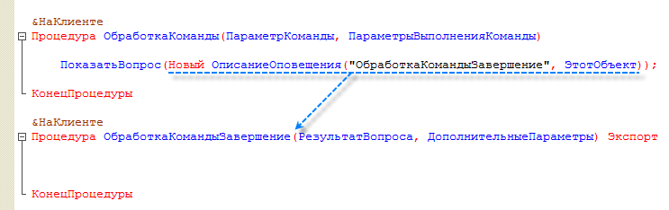
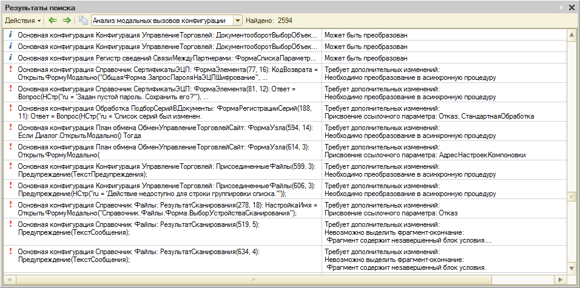
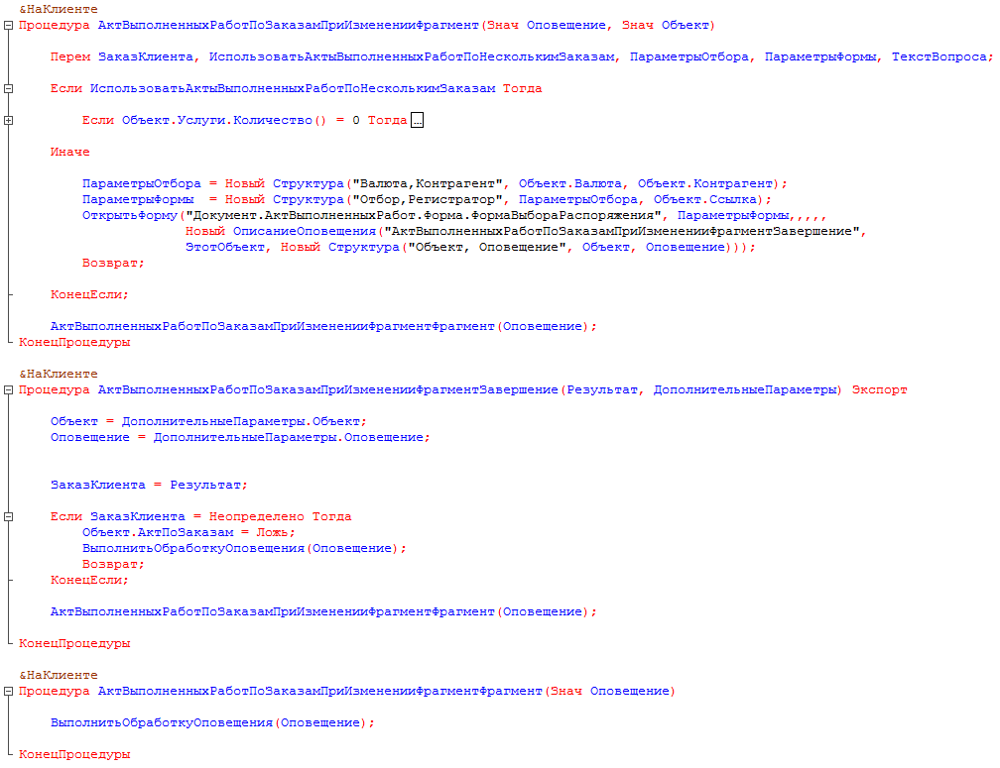

Разработка конфигураций в режиме без использования модальности
Зачем надо отказываться от модальности
1С:Предприятие использует модальные окна в тех ситуациях, когда от пользователя требуется ввод информации, без которой невозможно дальнейшее выполнение алгоритма. При этом полностью блокируется весь остальной интерфейс программы, а исполнение программного кода останавливается до тех пор, пока пользователь не закроет модальное окно. С появлением веб-клиента и с переходом 1С:Предприятия на мобильные платформы, модальные окна оказались источником большого количества неудобств и проблем, зачастую неразрешимых.
Как правило "десктопные" браузеры лучше или хуже, но поддерживают модальные окна и открывают их в новом окне браузера как "всплывающее окно". Но из-за того, что технология всплывающих окон массово используется в Интернете для размещения рекламы, практически во всех браузерах стандартно отключен показ всплывающих окон. В подавляющем большинстве случаев без изменения этой настройки браузера работа веб-клиента становится невозможной.
Другая проблема заключается в том, что мобильные браузеры вообще не поддерживают модальные окна.
В такой ситуации вариант работы интерфейса 1С:Предприятия без использования модальных окон снимает все перечисленные выше проблемы. При этом не происходит отказа от функциональности, которая обеспечивалась ранее модальными окнами. Но эта функциональность реализуется другими технологиями, которые не препятствуют работе 1С:Предприятия в браузерах. В новом режиме работы интерфейса окно, которое раньше было бы модальным, рисуется в пределах родительского окна, и точно так же блокирует весь остальной интерфейс веб-клиента. В результате:
Когда надо отказываться от модальности
Не нужно «бросать всё» и начинать отказываться от модальности. Есть несколько случаев, когда можно продолжать работать в модальном режиме.
Во-первых, не любая версия технологической платформы поддерживает режим работы интерфейса без использования модальности. Этот режим работы существует, начиная с версии 8.3.3.721 (06.09.2013). Поэтому, если вы работаете на младших версиях платформы, можете пока не озадачиваться отказом от модальности.
Во-вторых, не все прикладные решения в обязательном порядке должны использовать этот режим. Критичными являются приложения, работа с которыми будет вестись:
Если ваше прикладное решение заведомо не будет использоваться в этих режимах, вы можете пока не отказываться от модальности.
Однако все типовые решения 1С разрабатывает исходя из того, что они могут использоваться любым из доступных способов. Поэтому в них основным режимом работы интерфейса является режим без использования модальности. В этом режиме будут работать новые прикладные решения. На этот режим будут переводиться старые прикладные решения. А значит, этот режим работы вам лучше начать осваивать уже сейчас. Даже если ваше приложение пока может его не использовать, мы рекомендуем, по возможности, начать перевод уже сейчас. Потому что в будущем этот режим работы будет единственным.
Сравнение модального и немодального режимов работы
Следует сказать, что отказ от модальности - это вещь не простая. Она является существенным поворотом в сторону асинхронной модели работы клиентского приложения. Не все сценарии, использующие на данный момент модальные окна, могут быть легко переведены на использование блокирующих окон.
Существенное количество сценариев работы может потребовать не просто замены одних методов встроенного языка другими, а изменения самого подхода к проектированию юзабилити интерфейса прикладного решения. Проще говоря, прежде чем пытаться переделать модальный диалог, стоит подумать, а можно ли здесь вообще обойтись без него?
Подробнее об этом мы поговорим позже, а для начала разберемся, в чём же заключаются принципиальные отличия этих двух режимов работы интерфейса. Понять разницу модального и немодального режимов работы проще всего на небольшом примере. Старая процедура, открывавшая модальное окно и обрабатывавшая полученные им данные, могла выглядеть так:
Метод Вопрос() открывает модальное окно. В момент исполнения этого метода дальнейшее исполнение программного кода останавливается, модальное окно блокирует весь интерфейс и ожидает реакции пользователя.
После того, как пользователь нажимает одну из кнопок, например "Да", исполнение кода продолжается, а модальное окно исчезает и пользователю снова становится доступен весь интерфейс:
В этом примере выводятся два тестовых сообщения и на картинке видно, что оба сообщения появляются на экране только после того, как модальное окно исчезнет.
Таким образом можно сказать, что старый режим работы обеспечивает модальность как для разработчика (останавливается исполнение кода), так и для пользователя (блокируется интерфейс, доступно только модальное окно).
Новый режим работы интерфейса обеспечивает модальность лишь для пользователя. Для разработчика, в момент отображения блокирующего окна, исполнение программного кода не останавливается. Чтобы увидеть это рассмотрим не совсем корректный пример:
Метод ПоказатьВопрос() открывает блокирующее окно. В момент исполнения этого метода блокирующее окно заблокирует интерфейс, и он будет ожидать реакции пользователя. Однако исполнение программного кода на этом не остановится, и будут выполнены все операторы, следующие за методом ПоказатьВопрос(). В данном случае будет выведено сообщение.
После того, как пользователь нажмёт одну из кнопок, например "Да", начнётся исполнение другой процедуры. Той, которая была назначена в качестве обработчика оповещения при вызове метода ПоказатьВопрос():
В этом примере мы специально допустили ошибку. Но благодаря ей мы можем увидеть обе важные особенности.
Во-первых, алгоритм, который раньше являлся одним целым, теперь нужно разделять на две части. Одна часть открывает блокирующее окно. Вторая часть обрабатывает реакцию пользователя в блокирующем окне. Чтобы система знала, с какого места продолжать исполнение программного кода, блокирующему окну передаётся имя процедуры, которая должна быть выполнена тогда, когда пользователь закроет это окно.
Во-вторых, после оператора, открывающего блокирующее окно, не должно содержаться исполняемого кода. Иначе этот код будет выполнен, не дожидаясь реакции пользователя.
Поэтому правильным решением является перенос всего кода в процедуру, исполняемую после закрытия блокирующего окна:
Дополнительно об этом можно почитать в документации Руководство разработчика, раздел 7.8. Различные подходы к модальности.
Тут нужно оговориться, и мы это видели на примере, что нет запрета на то, чтобы после оператора, открывающего блокирующее окно, содержался какой-либо исполняемый код. Но вы должны понимать, что платформа выполнит этот код без остановки. Независимо от того, что введёт пользователь в блокирующем окне, или когда он это окно закроет. Если такое поведение не противоречит логике вашего прикладного решения, то пожалуйста, можно использовать этот вариант.
Механизмы платформы для отказа от модальности
Этот раздел носит, скорее, «энциклопедический» характер. Он будет полезен тем, кто хочет в полной мере познакомиться со всеми механизмами платформы, которые появились для обеспечения немодального режима работы.
Если же вам не терпится приступить к «активным действиям», то вы можете перейти сразу к одному из следующих разделов:
Итак, возвращаясь к механизмам платформы нужно сказать, что по большому счёту они делятся на две большие группы. Механизмы, которые обеспечивают работу в немодальном режиме и механизмы, помогающие перейти в этот режим. Основная часть этих механизмов появилась в платформе начиная с версии 8.3.3.721 (06.09.2013), а в версии 8.3.5 в неё были добавлены инструменты рефакторинга, облегчающие преобразование имеющихся конфигураций. Перечислим все эти механизмы по-порядку.
У конфигурации появилось новое свойство - "Режим использования модальности". Именно оно и определяет, в каком режиме работает конфигурация:
Новый режим открытия окна формы
У свойства формы РежимОткрытияОкна появилось новое значение - БлокироватьВесьИнтерфейс. Именно это значение теперь следует использовать для того, чтобы из всего интерфейса пользователю была бы доступна только одна открытая форма. Пример использования этого свойства есть в разделе Как открыть произвольную форму в блокирующем режиме.
Немодальные аналоги модальных методов
Некоторые методы встроенного языка открывают модальные окна. Для этих методов в платформе были созданы «методы-дублёры», которые обладают той же функциональностью, но используют блокирующие окна. Например, старый метод Вопрос() и новый «метод-дублёр» ПоказатьВопрос(). Полный список этих методов можно посмотреть в документации Руководство разработчика, Приложение 13. Соответствие синхронных методов асинхронным аналогам.
Кроме документации метод-дублёр можно посмотреть и в синтакс-помощнике. Для каждого старого метода они указаны.
Пример использования этих методов есть, например, в разделе Вопрос в модуле команды, формы или в общем модуле.
Новый синтаксис метода ОткрытьФорму()
Для того чтобы открывать форму в блокирующем режиме, метод-дублёр создавать не стали. Потому что уже и так существовало два метода: ОткрытьФормуМодально() и ОткрытьФорму(). Поэтому в привычный метод ОткрытьФорму() добавили несколько новых параметров: ОписаниеОповещенияОЗакрытии и РежимОткрытияОкна.
Они позволяют сразу передать форме нужное описание оповещения и указать новый режим открытия окна. Пример можно посмотреть в разделе Как поступить, если форму нужно открывать то в обычном, то в блокирующем режиме.
Объект встроенного языка ОписаниеОповещения
Назначение этого объекта - указать точку конфигурации, с которой должно быть продолжено исполнение кода после того, как пользователь закроет блокирующее окно. Этот объект содержит имя экспортируемой процедуры, которая начнёт выполняться, а также указание на модуль, в котором находится эта процедура.
Если процедура находится в том же модуле, в котором создаётся описание оповещения, то для указания на этот модуль используется значение ЭтотОбъект. Это новое свойство, реализованное для управляемой формы, команды командного интерфейса и общего модуля. Именно в этих модулях может находиться процедура обработки оповещения. Пример есть в разделе Вопрос в модуле команды, формы или в общем модуле.
Иногда возникает необходимость разместить обработчик оповещения не в том модуле, в котором создаётся описание оповещения, а в другом, например, в общем модуле. В таком случае вместо ЭтотОбъект можно указать имя общего модуля. Пример можно посмотреть в разделе Вопрос в модуле управляемого приложения.
Кроме этих параметров описание оповещения может содержать структуру с произвольными данными. Передача этих данных в обработчик оповещения может понадобиться для того, чтобы алгоритм, выполняемый после реакции пользователя, мог использовать значения, вычисленные перед открытием блокирующего окна. Такой пример можно посмотреть в разделе Как передать дополнительную информацию в форму, открываемую в блокирующем режиме.
Свойство формы ОписаниеОповещенияОЗакрытии
У формы появилось новое свойство - ОписаниеОповещенияОЗакрытии. В него передаётся то описание оповещения, которое мы указываем в методе ОткрытьФорму(). После закрытия формы исполнение кода продолжается с процедуры, указанной в этом описании оповещения.
Метод ВыполнитьОбработкуОповещения()
Этот метод используется для того, чтобы выполнить процедуру обработчика оповещения. Чтобы указать на этот обработчик, в метод передаётся описание оповещения.
Этот метод требуется в сложных «многоуровневых» алгоритмах асинхронных вызовов, т.к. описание оповещения может быть сконструировано в начале алгоритма, а реальное использование этого обработчика может понадобиться через несколько вложенных процедур. Такой пример можно посмотреть в разделе Вопрос во вложенной процедуре, после которой есть код.
Поиск модальных методов в режиме расширенной проверки конфигурации
В механизме проверки конфигурации реализован новый режим расширенной проверки "Поиск использования модальности". Он позволяет найти те фрагменты кода, которые приводят к открытию модальных окон. Пример можно посмотреть в разделе Проверка конфигурации в режиме Конфигуратор.
Из командной строки эта проверка выполняется с помощью параметра -CheckUseModality ключа командной строки запуска ExtendedModulesCheck.
Инструменты для полуавтоматического перевода конфигураций в режим без использования модальности
Эти инструменты реализованы в платформе начиная с версии 8.3.5. Они собраны в меню "Конфигурация - Рефакторинг" и " Текст - Рефакторинг - Модальные вызовы". С помощью этих инструментов можно частично автоматически, а частично с применением «ручного труда» перевести существующую конфигурацию в немодальный режим работы. Примеры использования этих инструментов можно посмотреть в разделах Автоматическое преобразование модальных методов и Ручное преобразование конструкций, которые невозможно преобразовать автоматически.
Если вы создаёте новую конфигурацию и хотите, чтобы она не использовала модальный режим, нужно придерживаться нескольких простых советов.
Во-первых, о свойствах самой конфигурации беспокоиться не надо. Режим без использования модальности является стандартным для новых конфигураций. Поэтому после создания новой информационной базы с пустой конфигурацией её свойство "Режим использования модальности" будет установлено в значение "Не использовать".
Во-вторых, прежде чем использовать блокирующие окна, или методы, открывающие диалоги в блокирующем режиме, следует подумать, есть ли в них необходимость. Если логика работы позволяет обойтись без блокирующего диалога - лучше не использовать его. Более того, в целом ряде случаев ради этого полезно изменить алгоритм или какие-то интерфейсные решения. Потому что это может быть проще, понятнее и надёжнее, чем пытаться реализовать «именно такой» сценарий работы в асинхронной модели работы интерфейса.
Как мы уже говорили ранее, не все сценарии работы могут быть легко и просто переведены на использование блокирующих диалогов. Если нельзя отказаться от использования блокирующих диалогов, то в новых конфигурациях имеет смысл заранее продумывать разделение кода, требующего действий пользователя, и кода, реализующего прикладную логику. И стараться их не смешивать. Например, сначала выполнить все интерактивные действия, «пообщаться» с пользователем, а после этого выполнить прикладной алгоритм «без вопросов».
В-третьих, если вы всё же решили использовать блокирующие диалоги, то вместо старых, модальных методов, следует использовать их новые немодальные аналоги. Обычно (но не всегда) немодальные аналоги начинаются со слова «Показать». В синтакс-помощнике для каждого старого модального метода указан его блокирующий аналог. А полный список соответствия всех методов можно посмотреть в документации.
В-четвёртых, чтобы открыть форму в блокирующем режиме вместо метода ОткрытьФормуМодально() нужно использовать метод ОткрытьФорму(), но с новым синтаксисом. Новый синтаксис позволяет указать ОписаниеОповещения и режим открытия окна.
В-пятых, если форма всегда будет открываться только в блокирующем режиме, в конфигураторе нужно установить её свойство РежимОткрытияОкна в значение "Блокировать весь интерфейс".
Здесь надо сделать следующее замечание. Используя "Блокировать весь интерфейс" мы полностью моделируем для пользователя старое, модальное поведение. Но дело в том, что модальные окна, являясь элементами синхронной (блокирующей) модели, не очень хорошо сочетаются с природой веб-приложений, которые в большинстве своём построены на асинхронной модели. То есть веб-приложения не блокируют действия пользователя, если на это нет совсем крайней необходимости.
Поэтому если мы хотим, а мы хотим, двигаться в сторону веб-приложений, то вместо "Блокировать весь интерфейс" лучше использовать "Блокировать окно владельца". Тогда окно владельца будет заблокировано, но остальной интерфейс прикладного решения для пользователя будет доступен.
В некоторых сценариях это может быть полезно. Например для того, чтобы выполнить действия, препятствующие дальнейшей работе длительной обработки. Через 30 минут её работы выяснилось, что не все нужные документы проведены. Тогда пользователь может провести документы, а потом вернуться к прерванной обработке. Не запуская её с самого начала.
В некоторых ситуациях это может быть вредно. Потому что пользователь может "потерять фокус", начать "гулять" по интерфейсу, зайти далеко и потом долго искать ту форму, на которой был задан вопрос.
Однозначно хорошего совета тут дать нельзя. Но все же, прежде чем использовать "Блокировать весь интерфейс" в каждом конкретном случае желательно проанализировать возможность использования значения "Блокировать окно владельца". Потому что оно больше подходит к формату веб-приложений.
В-шестых, так как указывать ОписаниеОповещения нужно во всех методах, использующих блокирующие окна, в конфигураторе есть возможность автоматизировать эту работу (начиная с версии 8.3.5). Достаточно написать имя метода и открывающую скобку. А после этого из контекстного меню вызвать команду "Рефакторинг - Создать обработку оповещения":
В результате платформа создаст конструктор и процедуру, обрабатывающую оповещение:

Далее мы разберём несколько типичных примеров использования немодальных вызовов. Эти примеры помогут вам разобраться в новых подходах к написанию кода и построению алгоритмов.
Вопрос в модуле команды, формы или в общем модуле
Суть этого примера заключается в том, что мы используем немодальный метод-дублёр, в который передаём описание оповещения. А всю логику, которая должна обрабатывать ответ пользователя, помещаем в отдельную экспортируемую процедуру в этом же модуле. Именно на эту процедуру и указывает описание оповещения.
Вопрос в модуле управляемого приложения
Особенность этого примера заключается в том, что нет возможности сослаться на модуль приложения с помощью свойства ЭтотОбъект. Поэтому процедуру, обрабатывающую оповещение, нужно располагать, например, в неглобальном клиентском общем модуле. В конструкторе описания оповещения на такой модуль можно сослаться, просто указав его имя:
Этот же приём нужно использовать, если вы находитесь в глобальном общем модуле.
По поводу модуля управляемого приложения нужно сделать ещё одно замечание. Возможно, вы захотите организовать немодальный диалог с пользователем в обработчике ПередНачаломРаботыСистемы. Так, чтобы до момента ответа пользователя не открывалось главное окно приложения. К сожалению, на момент написания статьи, такой возможности нет. И в этом случае вам придётся выбрать другую логику работы прикладного решения.
Другой сценарий, который является крайне нежелательным - это немодальный диалог в обработчике ПередЗавершениемРаботыСистемы. Во-первых потому, что в условиях веб-клиента браузеры очень негативно относятся к показу каких-либо сообщений при закрытии приложений и блокируют их. Во-вторых потому, что наличие такого диалога не позволит реализовать некоторые сценарии работы.
Например, в конфигурации есть форма, перед закрытием которой также задаётся вопрос пользователю в немодальном диалоге. Допустим, пользователь модифицировал данные в этой форме и, не сохраняя их, пытается закрыть всё приложение. В результате он ответит что-то в диалоге перед закрытием формы, форма закроется, но приложение останется открытым. Так происходит потому, что в немодальном диалоге перед закрытием формы сначала отменяется стандартная последовательность действий системы (см. пример). А это, в том числе, отменяет и закрытие самого приложения.
Как открыть произвольную форму в блокирующем режиме
Если у вас есть форма, которую вы всегда хотите открывать только в блокирующем режиме, можно сразу, в конфигураторе, установить её свойство РежимОткрытияОкна в значение "Блокировать весь интерфейс". А затем открывать её прежним методом ОткрытьФорму(), передавая в него описание оповещения:
Как поступить, если форму нужно открывать то в обычном, то в блокирующем режиме
В этом случае в конфигураторе свойство формы РежимОткрытияОкна лучше оставить в стандартном значении "Независимый". А при открытии формы в явном виде указывать нужный режим открытия окна прямо в методе ОткрытьФорму():
Как передать дополнительную информацию в форму, открываемую в блокирующем режиме
Может так случиться, что до вызова блокирующего окна у вас накопились какие-то значения, которые должны быть использованы после того, как пользователь ответит на вопрос или закроет блокирующую форму. Как передать их в процедуру, обрабатывающую оповещение?
Для этого у объекта ОписаниеОповещения существует третий параметр в конструкторе, в который можно передать структуру, содержащую значения, необходимые в дальнейшем:

Вопрос во вложенной процедуре, после которой нет кода
Рассмотрим ситуацию, когда блокирующий вызов хочется написать во вложенной процедуре. Например, так:

В этом случае достаточно будет вместо одной вложенной процедуры написать две процедуры, использующие блокирующий метод ПоказатьВопрос():
Вопрос во вложенной процедуре, после которой есть код
Рассмотрим более сложный случай, когда после вызова вложенной функции выполнятся некоторый код. Например, так:

Казалось бы, следуя рекомендациям, надо просто заменить вложенную процедуру двумя процедурами:
Однако в этом случае алгоритм, следующий за вызовом вложенной процедуры, будет выполнен ещё до того, как пользователь ответит на вопрос. Ведь, как мы знаем, исполнение кода не останавливается после выполнения блокирующего метода (Сравнение модального и немодального режимов работы):
Поэтому в такой ситуации нужно не только использовать блокирующий метод с вызовом оповещения, но ещё и выполнять асинхронный вызов самой вложенной процедуры, также используя оповещение:
Здесь во вложенную процедуру мы сразу передаём описание оповещения, в котором содержится тот код, который должен быть выполнен после вложенной процедуры (последняя процедура). Вызывая блокирующий метод, мы передаём ему «его» описание оповещения (ВложеннаяПроцедураЗавершение), а также, через дополнительные параметры, то описание оповещения, которое нужно будет выполнить после того, как будут обработаны интерактивные действия пользователя (ОбработкаКомандыЗавершение).
Если сразу осознать такую конструкцию сложно, можно писать «по старому», а затем использовать функции рефакторинга. Они доступны начиная с версии 8.3.5. Как это делается можно посмотреть в примере Необходимо преобразование в асинхронную процедуру.
Вопрос в обработчике формы ПередЗакрытием
Особенность диалога с пользователем в этом (и многих других) обработчиках заключается в том, что в зависимости от реакции пользователя принимается решение: продолжать дальнейшие действия, или отказаться от них. Для этого используется параметр процедуры Отказ. При одном ответе пользователя мы отказываемся от продолжения (Отказ = Истина). При другом ответе пользователя - продолжаем дальнейшие действия.
В данном случае сложность заключается в том, что ответ пользователя мы узнаем уже после того, как выйдем из контекста этого обработчика. В процедуре, обрабатывающей оповещение. А параметр Отказ нужно установить именно в этом обработчике.
Поэтому мы действуем в два приёма:
Проблема заключается в том, что обработчик ПередЗакрытием будет выполнен два раза. И чтобы отличить первое его выполнение от второго (когда ответ пользователя уже известен) мы используем клиентскую переменную ВыполняетсяЗакрытие в качестве флага.
В первый проход её значение равно Ложь, и это значит, что нужно отказаться от закрытия и задать вопрос. Во второй проход её значение равно Истина, и это значит, что вопрос задавать не надо:

Вопрос в обработчике формы ПередЗаписью
В обработчике события формы ПередЗаписью также может возникнуть потребность задать вопрос. Как и в предыдущем примере. Однако здесь вопрос так просто не решается. Отличие заключается в следующем.
В предыдущем примере, оказываясь в обработчике ПередЗакрытием, мы однозначно знали действие, которое должно быть выполнено. Это закрытие формы. Поэтому в обработке оповещения мы смело писали Закрыть().
Но в обработчике ПередЗаписью мы такой однозначной информации не имеем. В этом обработчике мы можем оказаться по двум причинам: если пользователь нажал Записать, или если он нажал Записать и закрыть. То есть дальнейший сценарий действий нам неизвестен. Определить его стандартными способами, находясь внутри этого обработчика, мы не можем.
Поэтому тут можно предложить три варианта, но все они, к сожалению, обладают недостатками:
Как переделывать старые конфигурации
Переделка имеющихся конфигураций для работы в режиме без использования модальности сводится к трём этапам:
Далее мы рассмотрим все три этапа по-порядку. Какие инструменты можно использовать, какие рекомендации можно дать.
Существует несколько инструментов, которые позволяют найти модальные вызовы конфигурации. Некоторые из этих инструментов позволяют также оценить возможность автоматического преобразования этих вызовов.
Для того чтобы прямо в пользовательском режиме увидеть модальные вызовы конфигурации можно использовать свойство конфигурации "Режим использования модальности". Его нужно установить в значение "Использовать с предупреждением". Тогда в процессе работы прикладного решения будут выводиться сообщения каждый раз, как выполняется модальный метод. Но работе приложения это препятствовать не будет:
Проверка конфигурации в режиме Конфигуратор
Можно найти все методы, открывающие модальные диалоговые окна. Для этого нужно выполнить проверку конфигурации с установленным флажком "Поиск использования модальности".
Проверка конфигурации - Расширенная проверка - Поиск использования модальности:
Результат проверки будет выдан в окно служебных сообщений, из которого можно сразу же перейти в модуль, в котором находится данный метод:
Нужно отметить, что эта проверка обнаруживает не все возможные модальные вызовы, а только те, которые можно определить «наверняка». То есть это модальные методы глобального контекста и модальные методы тех объектов, тип которых однозначно определён в анализируемом контексте.
Поэтому, например, в приведённом примере проверка не обнаруживает модальное открытие диалога выбора цвета во вложенной процедуре. В контексте этой процедуры тип переменной "Диалог" неизвестен.
Можно найти все модальные вызовы в каком-либо одном модуле (начиная с версии 8.3.5). Для этого нужно открыть этот модуль и выполнить команду контекстного меню "Рефакторинг - Модальные вызовы - Найти модальные вызовы модуля" (эти же команды доступны из меню "Текст"):

В этом случае будут найдены все строки кода, которые приводят или могут привести к открытию модальных окон. В том числе и те строки, где открытие модального окна возможно, если объект имеет определённый тип:
Например, во вложенной процедуре в данном примере действительно будет открыто модальное окно для выбора цвета.
Если бы во вложенную процедуру в переменной "Диалог" передавалась бы выборка справочника, то, естественно, никакого модального вызова не было бы. Однако проверка всё равно отметила бы эту строку как «потенциально опасную».
Поэтому окончательное решение в таких случаях нужно принимать на основе визуального анализа алгоритма и типов используемых объектов.
Поиск с анализом возможности автоматического преобразования
Можно не только найти все модальные вызовы, но и оценить возможность их автоматического преобразования (начиная с версии 8.3.5). Оговоримся, что автоматическое преобразование выполняется не во всех случаях, подробнее об этом можно прочитать в разделе Автоматическое преобразование модальных методов.
Анализ модальных вызовов выполняется для всей конфигурации командой "Конфигурация - Рефакторинг - Анализ модальных вызовов конфигурации":
Перед выполнением анализа можно задать параметры. Они позволяют уточнить анализ и одновременно с анализом выполнить преобразование:
Со стандартными значениями (если ничего не менять) буду найдены только те вызовы модальных методов, которые удалось определить однозначно:
Если установить флажок "Отображать методы объектов неопределенного типа", то тогда будут показаны и те методы объектов, которые потенциально могут привести к открытию модальных окон. Это могут быть действительно модальные вызовы, а может быть и нет. Всё зависит от типа объекта, который нужно определять визуально, анализируя код программы:
В любом случае (с теми или иными параметрами анализа) результат будет содержать подробную информацию по каждому вызову с комментарием:

Вызовы, имеющие отметку "Может быть преобразован", поддаются автоматическому преобразованию, которое выполняется этой же командой (нужно установить соответствующий флажок). Подробнее можно прочитать в разделе Автоматическое преобразование модальных методов.
С теми вызовами, про которые сказано, что они "Требуют дополнительных изменений", нужно разбираться вручную. Тут сложно описать все возможные ситуации, но по некоторым типичным сообщениям можно дать примеры.
Автоматическое преобразование модальных методов
Автоматическое преобразование можно выполнить для всей конфигурации командой "Конфигурация - Рефакторинг - Анализ модальных вызовов конфигурации - Производить преобразование найденных вызовов".
Можно выполнить аналогичное преобразование только для одного модуля. Для этого можно использовать команду контекстного меню "Рефакторинг - Модальные вызовы - Преобразовать модальные вызовы модуля", или аналогичную команду из меню "Текст".
Эти инструменты доступны начиная с версии 8.3.5.
Автоматически преобразуются только тривиальные вызовы. Это такие вызовы, преобразование которых затрагивает одну процедуру и не требует операций помимо выделения объекта.
Остальные вызовы требуют вашего вмешательства. Часть из них можно также преобразовать автоматически, но с помощью последовательного выполнения других команд рефакторинга. Другая часть потребует предварительного изменения алгоритма программы. Некоторые такие типичные ситуации рассматриваются в примерах следующего раздела.
Ручное преобразование конструкций, которые невозможно преобразовать автоматически
В этом разделе мы разберём некоторые типичные случаи, когда автоматическое преобразование невозможно и требуется вмешательство разработчика.
Как мы уже неоднократно говорили, далеко не во всех сценариях работы нужно стремиться «во что бы то ни стало» преобразовать модальный код в блокирующий. Как поступить в каждом конкретном случае - это вопрос творческий. Дать готовые рекомендации вроде «если у вас то-то, то поступить надо так-то» довольно затруднительно.
Мы рекомендуем отталкиваться от того соображения, что асинхронная модель работы, по сути, требует другого подхода к проектированию юзабилити интерфейса. То есть, «по хорошему», «по большому счёту» вопрос не в том, чтобы заменить одни операторы встроенного языка другими. Вопрос в том, чтобы изменить сценарий работы прикладного решения таким образом, когда использование блокирующего диалога станет ненужным.
Поэтому если преобразование существующего модального кода кажется сложным, затратным или вовсе невозможным - не стоит ломать голову. Не стоит придумывать сложные способы преобразования его в блокирующий код. Лучше подумать о том, чтобы в этом месте совсем отказаться от использования модальности.
Необходимо преобразование в асинхронную процедуру
При анализе модулей могут встретиться конструкции, автоматическое преобразование которых затруднительно. Например, на модальный вызов во вложенной процедуре система отреагирует следующим образом:
Это не значит, что автоматическое преобразование невозможно. Это значит, что его результат может оказаться непростым. И по этой причине желательно, чтобы разработчик выполнил его отдельно и самостоятельно.
Чтобы в подобном случае выполнить преобразование, можно установить курсор на модальный метод и из контекстного меню выполнить команду "Рефакторинг - Модальные вызовы - Преобразовать модальный вызов":
Перед выполнением платформа известит вас, что кроме самого модального вызова необходимо преобразовать вызов процедуры к асинхронному виду:
И после этого будут выполнены оба преобразования:
Присвоение cсылочного параметра: СтандартнаяОбработка
Это простой, но типичный пример. Такое сообщение, например, будет выдано при анализе следующего модуля:
Здесь проблема заключается в том, что присвоение значения переменной СтандартнаяОбработка происходит уже после выполнения модального метода, а значит должно выполняться в процедуре обработчика оповещения. Но там это выполнить невозможно.
На самом деле видно, что в этом фрагменте строку СтандартнаяОбработка = Ложь; можно разместить и до вызова модального метода. От этого логика работы не меняется:
И если мы поступим таким образом, то сразу же облегчим задачу преобразования. Теперь оно может быть выполнено автоматически:
Присвоение cсылочного параметра: Отказ
Этот пример по своему «диагностическому сообщению» очень похож на предыдущий, но решение его уже не такое простое. Например, исходный код выглядит так:
Суть проблемы здесь та же, что и в предыдущем примере. После выполнения модального метода нужно присвоить значение переменной "Отказ". Но сделать это в контексте обработчика оповещения невозможно.
Дополнительная сложность заключается в том, что просто переставить местами строки кода, как в предыдущем примере, тоже нельзя. Отказ выполняется только при одном из условий.
Поэтому тут нужно применять решение, которое описано в разделе Вопрос в обработчике формы ПередЗакрытием. Выполнять закрытие формы «в два прохода». Первый раз безусловно отказываться от действия и только задавать вопрос. А второй раз уже закрывать форму. А чтобы не зациклиться, использовать переменную модуля для того, чтобы отличить первый проход от второго.
Невозможно выделить фрагмент-окончание: фрагмент содержит незавершенный блок условия... Пример 1
Подобные сообщения свидетельствуют о том, что код довольно сложен и алгоритм автоматического преобразования не может его обработать. В таких случаях можно попытаться изменить или упростить алгоритм для того, чтобы автоматическое преобразование стало возможным. Условия, при которых возможно автоматическое преобразование, подробно описаны в документации.
Безусловно, ситуации могут быть самыми разными и в общем случае они требуют творческого подхода. Здесь мы покажем пару типичных приёмов. Это избавление от цикла и выделение фрагментов в отдельную процедуру.
Итак, к сообщению, вынесенному в заголовок, может привести, например, следующий фрагмент:
Проблема этого фрагмента в том, что модальный вызов выполняется внутри цикла. Для того чтобы появилась возможность преобразовать этот фрагмент в немодальный, нужно изменить логику алгоритма. Вместо того чтобы задавать вопрос каждый раз, как попадается «подозрительная» строка таблицы, нужно сначала найти все подозрительные строки, а затем один раз задать вопрос по поводу этих строк:
После такого изменения становится доступным автоматическое преобразование:
Невозможно выделить фрагмент-окончание: фрагмент содержит незавершенный блок условия... Пример 2
Другой фрагмент, который может привести к такому сообщению, может выглядеть так:
Проблема этого фрагмента заключается в строках, отмеченных стрелками. Каждая из этих строк может быть выполнена как в результате прохода по ветке с модальным вызовом, так и в результате прохода по «безмодальным» веткам алгоритма. Если бы в коде присутствовала только одна из этих строк, автоматическое преобразование было бы возможно. Но так, как их две, ситуация становится довольно сложной.
Что можно сделать? Путём выделения фрагмента кода в отдельную процедуру можно попытаться уменьшить «вариативность» алгоритма.
Посмотрим на первую «проблемную» строку. Перейти к ней мы можем из двух веток алгоритма:
Причём эти переходы должны будут принципиально отличаться, ведь из «немодальной» ветки мы можем перейти в эту же процедуру, а из «модальной» мы должны будем перейти в обработчик оповещения.
Можно упростить эту ситуацию, выделив весь оператор "Если" в отдельную процедуру:
Тогда уже будет неважно, по какой ветке шло выполнение алгоритма. К выполнению «проблемной» строки мы придём из одной и той же точки - после возврата из выделенной процедуры.
Поскольку выделяемый фрагмент содержит "Возврат", выделим его в асинхронную процедуру. Получится четыре процедуры:
А теперь уже можно преобразовать вызов ОткрытьФормуМодально(). Вместо одной процедуры АктВыполненныхРаботПоЗаказамПриИзмененииФрагмент() получится три процедуры:

|
© ООО «1С». Все права защищены |
|